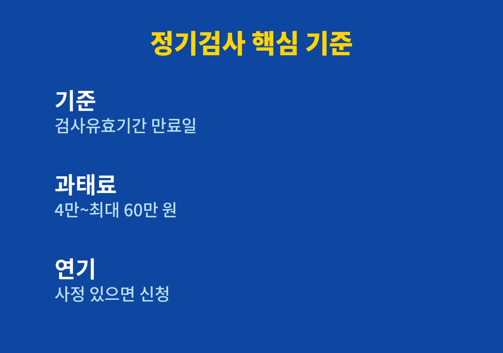
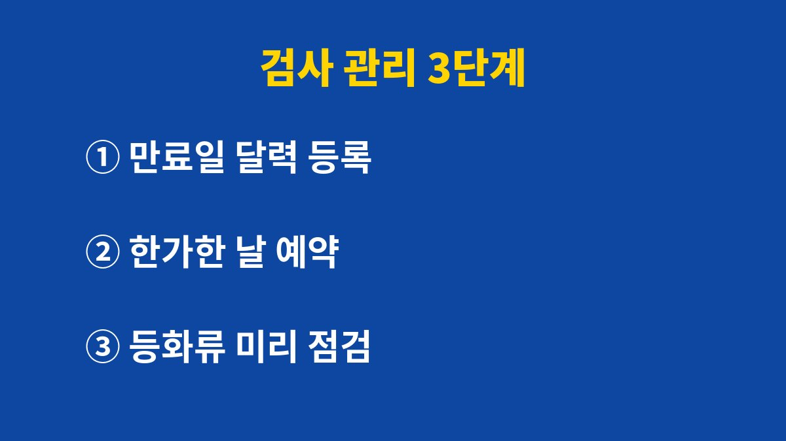

이 글은 자동차 정기검사 기간이 언제인지 몰라 늘 우편 안내문만 기다리는 사람을 위해 쓴 글이다.
2026년 11월 기준으로 한국교통안전공단과 지자체 안내를 확인하고, 내가 실제로 챙기는 방법을 정리했다.
나도 안내문을 서랍에 넣어 두고 잊어버려 기간을 넘길 뻔한 적이 있다.
정기검사는 몇 년에 한 번씩 돌아오다 보니 날짜를 따로 기억하는 사람이 드물다.
대부분 우편이나 문자 안내가 오면 그때서야 떠올린다.
그런데 안내를 받은 시점에 바쁘면 미뤄 두기 쉽고, 미룬 일은 대개 잊힌다.
검사 날짜를 기억하는 일을 남에게 맡기지 않기로 한 것이 가장 큰 변화였다.
나는 온라인 쇼핑몰을 운영하다 보니 연말이 가장 바쁜 시기다.
아이들 방학 준비까지 겹치면 차 검사는 늘 뒷순위로 밀린다.
실제로 안내문을 받아 두고도 한참 뒤에야 기간이 얼마 남지 않았다는 것을 알았다.
그때부터 검사 일정은 내가 먼저 챙기는 일로 바꿨다.
정기검사는 자동차관리법에 따라 검사유효기간 만료일을 기준으로 정해진 기간 안에 받아야 한다.
정확한 기간과 내 차의 만료일은 한국교통안전공단 자동차검사 안내와 사이버검사소에서 확인할 수 있다.
자동차등록증에도 검사유효기간이 적혀 있어 함께 보면 헷갈리지 않는다.
검사 기간을 넘기면 늦어진 날수에 따라 과태료가 부과되며, 2026년 기준 안내된 금액은 4만 원부터 최대 60만 원까지다.
늦어질수록 금액이 커지는 구조라 알아챈 즉시 받는 것이 부담을 줄이는 길이다.
부득이한 사정이 있으면 연기 신청 제도가 있으니 공단 안내를 먼저 확인한다.
| 항목 | 확인한 내용 | 확인 방법 |
|---|---|---|
| 검사 기준일 | 검사유효기간 만료일 | 자동차등록증·사이버검사소 |
| 지연 과태료 | 4만 원~최대 60만 원 | 공단·지자체 안내 |
| 사정이 있을 때 | 검사 연기 신청 제도 | 한국교통안전공단 안내 |

안내문을 받으면 바로 만료일을 휴대폰 달력에 적고, 그보다 앞선 날짜에 알림을 두 번 걸어 둔다.
종이는 잃어버려도 달력 알림은 때가 되면 알아서 울린다.
배우자와 공유하는 달력에 넣어 두니 서로 챙겨 주는 효과도 있었다.
알림을 두 번 걸어 두는 이유는 첫 알림을 바쁘다는 핑계로 넘겨도 두 번째 알림이 한 번 더 붙잡아 주기 때문이다.
검사소는 기간 막바지에 붐빌 수 있어서 나는 미리 예약하는 편이다.
쇼핑몰 주문이 적은 평일 오전을 골라 두면 일과 겹치지 않는다.
예약할 때 검사 종류와 준비물을 함께 확인해 두면 당일 헛걸음을 막을 수 있다.
검사 결과 지적 사항이 나오면 안내받은 기간 안에 정비하고 재검사를 받으면 된다.
검사 며칠 전에는 전조등과 브레이크등, 방향지시등이 모두 켜지는지 아이와 함께 확인한다.
아이가 차 뒤에서 불빛을 봐 주면 혼자 할 때보다 훨씬 빠르다.
경고등이 켜져 있거나 이상한 소리가 나면 검사 전에 정비소에 먼저 들르는 것이 마음 편하다.
아직 내 차 만료일을 모른다면 지금 자동차등록증부터 꺼내 보는 것이 시작이다.
순서대로 따라 하면 한 번 설정으로 다음 검사까지 신경 쓸 일이 줄어든다.
아래 순서는 내가 매번 그대로 반복하는 방법이다.
이 순서를 한 번 만들어 두면 차를 바꾸거나 두 대를 관리하게 되어도 같은 방법을 그대로 쓸 수 있다.

정기검사는 어렵지 않지만 날짜를 놓치면 과태료라는 비용이 생긴다.
만료일 확인과 달력 알림만 해 두어도 대부분의 실수는 막을 수 있다.
검사 기준과 금액은 바뀔 수 있으니 검사 직전에 한국교통안전공단 안내를 한 번 더 확인하길 바란다.
다음 글에서는 과태료와 범칙금을 조회하고 납부하는 방법을 정리할 예정이다.
※ 2026년 기준 공공기관 안내와 개인 경험을 바탕으로 정리한 글이며, 차종과 연식에 따라 기준이 다를 수 있어 차량 설명서와 공식 안내를 함께 확인하길 바란다.